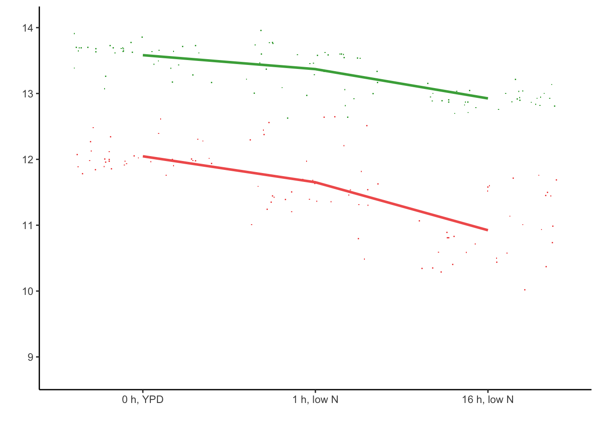

Wildtype differences in Low Nitrogen Network between Scer and Spar
source("utils.R")
sapply(c("dplyr", "readr", "tidyr", "purrr", "ggplot2", "ggpubr", "matrixStats", "ggVennDiagram", "ggExtra", "RColorBrewer"), require, character.only=TRUE)## dplyr readr tidyr purrr ggplot2
## TRUE TRUE TRUE TRUE TRUE
## ggpubr matrixStats ggVennDiagram ggExtra RColorBrewer
## TRUE TRUE TRUE TRUE TRUEload("data_files/CleanedCounts.RData")
TFnames <- setdiff(unique(gsub("delete", "", sample_info$genotype)), "WT")
p_thresh <- 0.05 # because DESeq2 already corrected for FDR with alpha = 0.05
eff_thresh <- 1
TFdel_lookup <- read_delim("data_files/downloaded_genomes_and_features/yeastract_46TFs.csv", col_names = FALSE, col_select = c(1,2), delim = ";")
colnames(TFdel_lookup) <- c("common", "systematic")Classifying genes by their nitrogen response
# First helper function for classifyNitrogenResponse
# Given replicate expression at one timepoint,
# returns mean and 95% confidence interval
measureCI <- function(.rep_expr) {
mean_expr <- mean(.rep_expr)
sd_expr <- sd(.rep_expr)
return(list(mean = mean_expr,
upper = mean_expr + 1.96*sd_expr,
lower = mean_expr - 1.96*sd_expr))
}
# # tests for measureCI
# measureCI(1) |> unlist()
# measureCI(rnorm(10, mean = 10, sd = 7)) |> unlist()# Second helper function
# Given pairs of confidence intervals calculated by measureCI, returns TRUE if CIs overlap or FALSE if CI_ref is greater or less than CI_test)
areOverlapingCIs <- function(.CI_ref, .CI_test) {
# check ref > test
if (.CI_ref$lower > .CI_test$upper) {
return(FALSE)
}
# check ref < test
if (.CI_ref$upper < .CI_test$lower) {
return(FALSE)
}
else {
return(TRUE)
}
}
# # tests for areOverlapingCIs
# test_ref_ci <- measureCI(rnorm(10, mean = 10, sd = 7))
# test_test_ci <- measureCI(rnorm(10, mean = 20, sd = 7))
# areOverlapingCIs(test_ref_ci, test_test_ci) # should be overlapping
# test_ref_ci <- measureCI(rnorm(10, mean = 10, sd = 3))
# test_test_ci <- measureCI(rnorm(10, mean = 20, sd = 2))
# areOverlapingCIs(test_ref_ci, test_test_ci) # shouldn't be overlapping
# test_ref_ci <- measureCI(1)
# test_test_ci <- measureCI(2)
# areOverlapingCIs(test_ref_ci, test_test_ci) # needs replicate measurementsclassifyNitrogenResponse <- function(.expr_vec, .timepoint_vec) {
timepoints <- unique(.timepoint_vec) |> sort(decreasing = FALSE)
if (length(timepoints) != 3) {
stop("All three timepoints are not represented.\n Represented timepoints:",
timepoints, "\n")
}
tp1CI <- measureCI(.expr_vec[.timepoint_vec == timepoints[1]])
tp2CI <- measureCI(.expr_vec[.timepoint_vec == timepoints[2]])
tp3CI <- measureCI(.expr_vec[.timepoint_vec == timepoints[3]])
# check TP1 vs TP2
result12 <- areOverlapingCIs(tp1CI, tp2CI)
# check TP2 vs TP3
result23 <- areOverlapingCIs(tp2CI, tp3CI)
# check TP1 vs TP3
result13 <- areOverlapingCIs(tp1CI, tp3CI)
if (result12 & result23) {
if (result13) {
return("none")
}
if (!result13) {
return("gradual")
}
}
if (!result12) {
if (result23) {
return("early")
}
if (!result23) {
return("both")
}
}
if (!result23) {
if (result12) {
return("late")
}
if (!result12) {
return("fitzwilliam") # (both, but we shouldn't ever reach this line)
}
}
}Re-run this code to sample random genes to see their response category:
# tests for classifyNitrogenResponse
test_org <- sample(c("cer", "par", "hyb"), 1)
test_gene <- sample(rownames(counts), 1)
test_expr <- counts[test_gene, sample_info$organism == test_org & sample_info$genotype == "WT"] |> as.numeric()
test_timepoints <- sample_info[sample_info$organism == test_org & sample_info$genotype == "WT", "time_point_num"] |> as.numeric()
classifyNitrogenResponse(.expr_vec = test_expr,
.timepoint_vec = test_timepoints)## [1] "none"Plot to see if we visually agree with the test result:
plotGenesTFdel(.gene_idxs = test_gene, .tf = "GCR2", .show_tfdel = FALSE,
.normalization = "none", .parents_or_hybrid = "parents")## Warning: Removed 1 row containing missing values or values outside the scale range
## (`geom_point()`).
plotGenesTFdel(.gene_idxs = test_gene, .tf = "GCR2", .show_tfdel = FALSE,
.normalization = "none", .parents_or_hybrid = "hybrid") Applying to all genes:
Applying to all genes:
responsedf <- expand_grid(organism = unique(sample_info$organism),
gene_name = rownames(counts))
responsedf$response <- map(c(1:nrow(responsedf)), \(i) {
org <- responsedf$organism[i]
g <- responsedf$gene_name[i]
expr_vec <- counts[g, sample_info$organism == org &
sample_info$allele == org &
sample_info$genotype == "WT"] |> as.numeric()
time_vec <- sample_info[sample_info$organism == org &
sample_info$allele == org &
sample_info$genotype == "WT", "time_point_num"] |> as.numeric()
classifyNitrogenResponse(.expr_vec = expr_vec,
.timepoint_vec = time_vec)
}) |> unlist()How many genes in each response group?
p <- ggplot(responsedf, aes(x = factor(response,
levels = c("none", "gradual", "early", "late", "both")))) +
geom_bar(aes(fill = response), stat = "count") +
scale_fill_discrete(limits = response_colordf$limits,
type = response_colordf$value) +
stat_count(geom = 'text',
color = 'black',
aes(label = after_stat(count)),
position = position_nudge(y = 200)) +
facet_wrap(~factor(organism,
levels = c("cer", "par", "hyb"),
labels = c("Scer", "Spar", "Hyb"))) +
theme_classic() +
theme(axis.text.x = element_text(angle = 90, hjust = 1, vjust = 0.5)) +
xlab("response") +
ylab("number of genes") +
ylim(c(0, 5200))
pFor the paper figure:
# pdf("../Umich_Dissertation/chapters/figures/Networks/responseBars.pdf",
# width = 7, height = 3)
# p
# dev.off()What percent of genes are conserved unresponsive in all 3 groups?
genedf <- responsedf |>
pivot_wider(id_cols = "gene_name",
names_from = "organism",
values_from = "response") |>
mutate(is_conserved_unresponsive = (cer == "none") &
(par == "none") & (hyb == "none"))
sum(genedf$is_conserved_unresponsive)/nrow(genedf)## [1] 0.7689868Which (responsive) genes are the same response in Scer and Spar?
genedf |> filter(!is_conserved_unresponsive) |>
select(cer, par) |> table()## par
## cer both early gradual late none
## both 0 0 2 0 0
## early 4 23 90 4 79
## gradual 3 15 195 39 317
## late 2 0 6 21 22
## none 2 21 138 25 230genedf |> filter(!is_conserved_unresponsive) |>
select(cer, hyb) |> table()## hyb
## cer both early gradual late none
## both 0 1 1 0 0
## early 0 137 38 1 24
## gradual 1 77 357 23 111
## late 0 1 6 40 4
## none 4 52 291 11 58genedf |> filter(!is_conserved_unresponsive) |>
select(par, hyb) |> table()## hyb
## par both early gradual late none
## both 1 8 0 2 0
## early 0 43 9 0 7
## gradual 0 127 244 9 51
## late 3 3 33 42 8
## none 1 87 407 22 131Numbers for 3-ring venn diagram of conserved vs diverged responsive genes
plotdf <- responsedf |> filter(response != "none")
p <- ggVennDiagram(list(Scer = plotdf$gene_name[plotdf$organism == "cer"],
Spar = plotdf$gene_name[plotdf$organism == "par"],
Hyb = plotdf$gene_name[plotdf$organism == "hyb"]))
p + scale_fill_gradient(low = "white", high = "red")
pdf("../Umich_Dissertation/chapters/figures/Networks/VennWTgradient.pdf",
width = 3, height = 3)
p + scale_fill_gradient(low = "#E4E5E5", high = "red")
dev.off()## quartz_off_screen
## 2Version with pseudo-colored categories for the rest of the paper:
p$layers[[1]]$mapping <- aes(fill = name)
p <- p + scale_fill_manual(values = c(
"Scer" = conservation_colordf$value[conservation_colordf$limits == "Scer"],
"Spar" = conservation_colordf$value[conservation_colordf$limits == "Spar"],
"Hyb" = conservation_colordf$value[conservation_colordf$limits == "Hyb"],
"Scer/Hyb" = conservation_colordf$value[conservation_colordf$limits == "ScerHyb"],
"Spar/Hyb" = conservation_colordf$value[conservation_colordf$limits == "SparHyb"],
"Scer/Spar" = conservation_colordf$value[conservation_colordf$limits == "ScerSpar"],
"Scer/Spar/Hyb" = conservation_colordf$value[conservation_colordf$limits == "conserved"]))
p For the paper figure:
For the paper figure:
# pdf("../Umich_Dissertation/chapters/figures/Networks/VennWT.pdf",
# width = 4, height = 4)
# p + theme(legend.position = "left")
# dev.off()Is the distribution of the conserved responsive genes the same breakdown as per genetic background?
genedf$conservation <- map(c(1:nrow(genedf)), \(i) {
if (genedf$cer[i] != "none" & genedf$par[i] != "none" & genedf$hyb[i] != "none") {
return("conserved")
}
if (genedf$cer[i] != "none" & genedf$par[i] == "none" & genedf$hyb[i] == "none") {
return("Scer")
}
if (genedf$cer[i] == "none" & genedf$par[i] != "none" & genedf$hyb[i] == "none") {
return("Spar")
}
if (genedf$cer[i] == "none" & genedf$par[i] == "none" & genedf$hyb[i] != "none") {
return("Hyb")
}
if (genedf$cer[i] != "none" & genedf$par[i] == "none" & genedf$hyb[i] != "none") {
return("ScerHyb")
}
if (genedf$cer[i] == "none" & genedf$par[i] != "none" & genedf$hyb[i] != "none") {
return("SparHyb")
}
if (genedf$cer[i] != "none" & genedf$par[i] != "none" & genedf$hyb[i] == "none") {
return("ScerSpar")
}
if (genedf$cer[i] == "none" & genedf$par[i] == "none" & genedf$hyb[i] == "none") {
return("unresponsive")
}
}) |> unlist()
conserved_responsive_idxs <- filter(genedf, conservation == "conserved") |>
select(gene_name) |> pull()
plotdf <- filter(responsedf, gene_name %in% conserved_responsive_idxs)
p <- ggplot(plotdf, aes(x = factor(response,
levels = c("none", "gradual", "early", "late", "both")))) +
geom_bar(aes(fill = response), stat = "count") +
scale_fill_discrete(limits = response_colordf$limits,
type = response_colordf$value) +
stat_count(geom = 'text',
color = 'black',
size = 3,
aes(label = after_stat(count)),
position = position_nudge(y = 25)) +
facet_wrap(~factor(organism,
levels = c("cer", "par", "hyb"),
labels = c("Scer", "Spar", "Hyb"))) +
theme_classic() +
theme(axis.text.x = element_text(angle = 90, hjust = 1, vjust = 0.5),
legend.position = "none") +
xlab("response") +
ylab("number of genes") +
ggtitle(paste(length(conserved_responsive_idxs), "conserved responsive genes")) +
ylim(c(0, 350))
pSame breakdown—Scer has most Early, Spar has most late, Hyb in the middle.
For the paper figure:
# pdf("../Umich_Dissertation/chapters/figures/Networks/consResponsiveBars.pdf",
# width = 3.5, height = 3.4)
# p
# dev.off()Gene Ontology
Are the conserved responsive genes more likely to be nitrogen-related than the non-conserved?
# conserved responsive
conserved_GOdf <- getGOSlimDf(.idxs = conserved_responsive_idxs,
.group_name = "conserved")
# Scer-only responsive
Scer_responsive_idxs <- filter(genedf, conservation == "Scer") |>
select(gene_name) |> pull()
Scer_GOdf <- getGOSlimDf(.idxs = Scer_responsive_idxs,
.group_name = "Scer")
# Spar-only responsive
Spar_responsive_idxs <- filter(genedf, conservation == "Spar") |>
select(gene_name) |> pull()
Spar_GOdf <- getGOSlimDf(.idxs = Spar_responsive_idxs,
.group_name = "Spar")
# Hyb-only responsive
Hyb_responsive_idxs <- filter(genedf, conservation == "Hyb") |>
select(gene_name) |> pull()
Hyb_GOdf <- getGOSlimDf(.idxs = Hyb_responsive_idxs,
.group_name = "Hyb")
# Scer-Hyb responsive
ScerHyb_responsive_idxs <- filter(genedf, conservation == "ScerHyb") |>
select(gene_name) |> pull()
ScerHyb_GOdf <- getGOSlimDf(.idxs = ScerHyb_responsive_idxs,
.group_name = "ScerHyb")
# Spar-Hyb responsive
SparHyb_responsive_idxs <- filter(genedf, conservation == "SparHyb") |>
select(gene_name) |> pull()
SparHyb_GOdf <- getGOSlimDf(.idxs = SparHyb_responsive_idxs,
.group_name = "SparHyb")
# Scer-Spar responsive
ScerSpar_responsive_idxs <- filter(genedf, conservation == "ScerSpar") |>
select(gene_name) |> pull()
ScerSpar_GOdf <- getGOSlimDf(.idxs = ScerSpar_responsive_idxs,
.group_name = "ScerSpar")
# (too many genes are conserved unresponsive to do an enrichment,
# it's like doing a GO enrichment on the whole genome)
# Lastly, what are those 8 Scer-Spar genes? There's only 8 of them
filter(genedf, cer != "none" &
par != "none" &
hyb == "none") |>
select(gene_name) |> pull()## [1] "YCL064C" "YDL059C" "YDR011W" "YER057C" "YER064C" "YGR060W" "YML034W"
## [8] "YMR252C"YCL064C = CHA1, YDL059C = RAD59, YDR011W = SNQ2, YER057C = HMF1, YER064C = VHR2, YGR060W = ERG25, YML034W = SRC1, YMR252C = MLO1
No obvious connections, CHA1 is the only nitrogen catabolism one, RAD59 works with RAD52 on coating DSBs
What are biggest differences in GO enrichment between these groups?
# ensures that genes aren't double-counted for being associated with multiple GO terms
getCombinedTermGenes <- function(.df, .term_vec) {
.df |> filter(term %in% .term_vec) |>
select(genes) |> pull() |> map(.f = strsplit, split = " ") |>
unlist() |> unique()
}
# same as above but only shows genes with sig term (any term)
getSigTermGenes <- function(.df) {
.term_vec <- .df |> filter(sig) |>
select(term) |> pull() |> unique()
.df |> filter(term %in% .term_vec) |>
select(genes) |> pull() |> map(.f = strsplit, split = " ") |>
unlist() |> unique()
}
# How many terms are in each conservation category and how many genes
# are part of at least one sig GO term in each conservation category?
GOdfs <- list(conserved = conserved_GOdf,
Scer = Scer_GOdf,
Spar = Spar_GOdf,
Hyb = Hyb_GOdf,
ScerHyb = ScerHyb_GOdf,
SparHyb = SparHyb_GOdf,
ScerSpar = ScerSpar_GOdf)
plotdf <- tibble(category = names(GOdfs))
plotdf$nTerms <- map(plotdf$category, \(nm) {
GOdfs[[nm]] |> filter(sig) |> nrow()
}) |> unlist()
plotdf$nSigGenes <- map(plotdf$category, \(nm) {
getSigTermGenes(.df = GOdfs[[nm]]) |>
length()
}) |> unlist()
plotdf$nGenes <- c(length(conserved_responsive_idxs),
length(Scer_responsive_idxs),
length(Spar_responsive_idxs),
length(Hyb_responsive_idxs),
length(ScerHyb_responsive_idxs),
length(SparHyb_responsive_idxs),
length(ScerSpar_responsive_idxs))
plotdf## # A tibble: 7 × 4
## category nTerms nSigGenes nGenes
## <chr> <int> <int> <int>
## 1 conserved 25 282 396
## 2 Scer 2 63 131
## 3 Spar 3 14 58
## 4 Hyb 10 97 230
## 5 ScerHyb 17 143 287
## 6 SparHyb 2 33 128
## 7 ScerSpar 0 0 8plotdf$category <- factor(plotdf$category,
levels = c("conserved", "Scer", "Spar", "Hyb",
"ScerHyb", "SparHyb", "ScerSpar"))
p <- ggplot(plotdf, aes(x = category, y = nTerms)) +
geom_bar(aes(fill = category),
stat = "identity") +
geom_text(aes(y = nTerms, label = paste0(nSigGenes, "/", nGenes, "\n=", round(nSigGenes/nGenes, digits = 2)*100, "%")), nudge_y = 2.5) +
scale_fill_discrete(type = conservation_colordf$value,
limits = conservation_colordf$limits) +
scale_y_discrete(name = "conservation") +
theme_classic() +
ylim(c(0, 30)) +
ylab("number of significant GO terms\n(Fisher's Exact p-value < 0.001)")## Scale for y is already present.
## Adding another scale for y, which will replace the existing scale.p
For the paper figure:
# pdf("../Umich_Dissertation/chapters/figures/Networks/GOtermBars.pdf",
# width = 6, height = 3)
# p
# dev.off()How many conserved GO terms are not ribosome related?
term_ribosome <- c("90S preribosome",
"cytosolic large ribosomal subunit",
"cytosolic small ribosomal subunit",
"cytosolic ribosome",
"large ribosomal subunit",
"preribosome",
"preribosome large subunit precursor",
"ribonucleoprotein complex",
"ribosome biogenesis",
"ribosomal large subunit biogenesis",
"ribosomal subunit export from nucleus",
"rRNA processing",
"protein-RNA complex assembly",
"sno(s)RNA-containing ribonucleoprotein complex",
"rRNA binding",
"small ribosomal subunit",
"structural constituent of ribosome",
"preribosome small subunit precursor",
"Pwp2p-containing subcomplex of 90S preribosome",
"small-subunit processome",
"t-UTP complex",
"preribosome, large subunit precursor")
# conserved
conserved_GOdf |> filter(!(term %in% term_ribosome) & sig) |>
select(term, group_count, overall_count, exact_pval) |>
mutate(exact_pval = formatC(exact_pval)) |>
xtable::xtable(digits = 0)## % latex table generated in R 4.5.0 by xtable 1.8-4 package
## % Fri Aug 8 16:48:51 2025
## \begin{table}[ht]
## \centering
## \begin{tabular}{rlrrl}
## \hline
## & term & group\_count & overall\_count & exact\_pval \\
## \hline
## 1 & amino acid metabolic process & 43 & 174 & 5.74e-13 \\
## 2 & amino acid transport & 17 & 43 & 3.083e-09 \\
## 3 & biosynthetic process & 144 & 1011 & 1.181e-16 \\
## 4 & carbohydrate metabolic process & 19 & 117 & 0.0008668 \\
## 5 & cytoplasmic translation & 56 & 97 & 4.808e-39 \\
## 6 & eisosome & 7 & 21 & 0.0005381 \\
## 7 & oligosaccharide metabolic process & 6 & 17 & 0.0009671 \\
## 8 & oxidoreductase activity & 53 & 287 & 2.218e-10 \\
## 9 & small molecule metabolic process & 89 & 581 & 6.317e-12 \\
## 10 & structural molecule activity & 69 & 268 & 2.026e-21 \\
## 11 & sulfur compound metabolic process & 17 & 87 & 0.000172 \\
## 12 & translation & 56 & 194 & 4.939e-20 \\
## 13 & transmembrane transporter activity & 43 & 312 & 4.394e-05 \\
## 14 & vacuole & 36 & 254 & 0.0001036 \\
## \hline
## \end{tabular}
## \end{table}# Scer-Hyb
ScerHyb_GOdf |> filter(!(term %in% term_ribosome) & sig) |>
select(term, group_count, overall_count, exact_pval) |>
mutate(exact_pval = formatC(exact_pval)) |>
xtable::xtable(digits = 0)## % latex table generated in R 4.5.0 by xtable 1.8-4 package
## % Fri Aug 8 16:48:51 2025
## \begin{table}[ht]
## \centering
## \begin{tabular}{rlrrl}
## \hline
## & term & group\_count & overall\_count & exact\_pval \\
## \hline
## 1 & cellular respiration & 13 & 59 & 1.018e-05 \\
## 2 & cytoplasmic stress granule & 16 & 94 & 3.22e-05 \\
## 3 & cytoplasmic translation & 21 & 97 & 2.585e-08 \\
## 4 & generation of precursor metabolites and energy & 23 & 118 & 4.528e-08 \\
## 5 & mitochondrial respiratory chain complex III & 7 & 9 & 3.898e-08 \\
## 6 & mitochondrial respiratory chain complex IV & 5 & 10 & 8.624e-05 \\
## 7 & multi-eIF complex & 5 & 10 & 8.624e-05 \\
## 8 & nucleolus & 25 & 225 & 0.0003823 \\
## 9 & response to starvation & 7 & 28 & 0.0005291 \\
## 10 & RNA polymerase I complex & 5 & 14 & 0.0005732 \\
## 11 & small molecule metabolic process & 49 & 581 & 0.0008408 \\
## \hline
## \end{tabular}
## \end{table}# Hyb
Hyb_GOdf |> filter(!(term %in% term_ribosome) & sig) |>
select(term, group_count, overall_count, exact_pval) |>
mutate(exact_pval = formatC(exact_pval)) |>
xtable::xtable(digits = 0)## % latex table generated in R 4.5.0 by xtable 1.8-4 package
## % Fri Aug 8 16:48:51 2025
## \begin{table}[ht]
## \centering
## \begin{tabular}{rlrrl}
## \hline
## & term & group\_count & overall\_count & exact\_pval \\
## \hline
## 1 & generation of precursor metabolites and energy & 16 & 118 & 3.796e-05 \\
## 2 & nucleobase-containing small molecule metabolic process & 19 & 176 & 0.0001753 \\
## 3 & nucleolus & 28 & 225 & 2.711e-07 \\
## 4 & oxidoreductase activity & 25 & 287 & 0.0005341 \\
## 5 & small molecule metabolic process & 43 & 581 & 0.0002391 \\
## \hline
## \end{tabular}
## \end{table}How many genes are associated with a ribosome related term and therefore excluded from each of the two above tables (to report by word in the paper)?
# conserved
cat("conserved nTerms:")## conserved nTerms:conserved_GOdf |> filter(term %in% term_ribosome) |> nrow()## [1] 15cat("conserved nGenes:")## conserved nGenes:getCombinedTermGenes(conserved_GOdf, term_ribosome) |> length()## [1] 91# Scer-Hyb
cat("Scer-Hyb nTerms:")## Scer-Hyb nTerms:ScerHyb_GOdf |> filter(term %in% term_ribosome) |> nrow()## [1] 14cat("Scer-Hyb nGenes:")## Scer-Hyb nGenes:getCombinedTermGenes(ScerHyb_GOdf, term_ribosome) |> length()## [1] 54# Hyb
cat("Hyb nTerms:")## Hyb nTerms:Hyb_GOdf |> filter(term %in% term_ribosome) |> nrow()## [1] 10cat("Hyb nGenes:")## Hyb nGenes:getCombinedTermGenes(Hyb_GOdf, term_ribosome) |> length()## [1] 35Ortholog correlations
Correlation is calculated between the three timepoints, average expression between replicates (because pairing replicates only works for hybrid alleles that we know are from the same cell)
collapsed <- expand_grid(gene_name = rownames(counts),
time_point_num = unique(sample_info$time_point_num),
organism = unique(sample_info$organism),
allele = unique(sample_info$allele))
collapsed$mean_expr <- map(c(1:nrow(collapsed)), \(i) {
g <- collapsed$gene_name[i]
org <- collapsed$organism[i]
al <- collapsed$allele[i]
tp <- collapsed$time_point_num[i]
expr_vec <- counts[g, sample_info$genotype == "WT" &
sample_info$organism == org &
sample_info$allele == al &
sample_info$time_point_num == tp]
return(mean(expr_vec))
}) |> unlist()
collapsed <- drop_na(collapsed) # NAs are combinations of org/allele that don't exist (i.e. spar allele in scer org)Giving each gene its correlation, either between parents (cor(Scer, Spar)), hybrid alleles (cor(Hyc, Hyp)), Scer-hyb ((cor(Scer, Hyb))), or Spar-hyb (cor(Spar, Hyb)).
getOrthoCor <- function(.g, .org1, .al1, .org2, .al2) {
expr1 <- collapsed |> filter(gene_name == .g &
organism == .org1 &
allele == .al1) |>
dplyr::rename("mean_expr1"="mean_expr") |>
select(gene_name, time_point_num, mean_expr1)
expr2 <- collapsed |> filter(gene_name == .g &
organism == .org2 &
allele == .al2) |>
dplyr::rename("mean_expr2"="mean_expr") |>
select(gene_name, time_point_num, mean_expr2)
outdf <- inner_join(expr1, expr2,
by = c("gene_name", "time_point_num"))
return(cor(outdf$mean_expr1, outdf$mean_expr2))
}
# tests for getOrthoCor
getOrthoCor(.g = "YGR192C",
.org1 = "cer", .al1 = "cer",
.org2 = "hyb", .al2 = "hyb")## [1] 0.1981743Plot to see if we visually agree with the test result:
plotExpressionProfileTFdel(.cts1 = counts["YGR192C",
sample_info$organism == "cer" &
sample_info$genotype == "WT",
drop = FALSE],
.cts2 = counts["YGR192C",
sample_info$organism == "hyb" &
sample_info$allele == "hyb" &
sample_info$genotype == "WT",
drop = FALSE],
.cts3 = counts["YGR192C",
sample_info$organism == "cer" &
sample_info$genotype == "GCR2delete",
drop = FALSE],
.cts4 = counts["YGR192C",
sample_info$organism == "hyb" &
sample_info$allele == "hyb" &
sample_info$genotype == "GCR2delete",
drop = FALSE],
.info1 = sample_info[sample_info$organism == "cer" &
sample_info$genotype == "WT",],
.info2 = sample_info[sample_info$organism == "hyb" &
sample_info$allele == "hyb" &
sample_info$genotype == "WT",],
.info3 = sample_info[sample_info$organism == "cer" &
sample_info$genotype == "GCR2delete",],
.info4 = sample_info[sample_info$organism == "hyb" &
sample_info$allele == "hyb" &
sample_info$genotype == "GCR2delete",],
.show_tfdel = FALSE,
.normalization = "log2")Hyb, however, has much stronger cor with Spar:
getOrthoCor(.g = "YGR192C",
.org1 = "par", .al1 = "par",
.org2 = "hyb", .al2 = "hyb")## [1] 0.998941Plot to confirm this:
plotExpressionProfileTFdel(.cts1 = counts["YGR192C",
sample_info$organism == "par" &
sample_info$genotype == "WT",
drop = FALSE],
.cts2 = counts["YGR192C",
sample_info$organism == "hyb" &
sample_info$allele == "hyb" &
sample_info$genotype == "WT",
drop = FALSE],
.cts3 = counts["YGR192C",
sample_info$organism == "par" &
sample_info$genotype == "GCR2delete",
drop = FALSE],
.cts4 = counts["YGR192C",
sample_info$organism == "hyb" &
sample_info$allele == "hyb" &
sample_info$genotype == "GCR2delete",
drop = FALSE],
.info1 = sample_info[sample_info$organism == "par" &
sample_info$genotype == "WT",],
.info2 = sample_info[sample_info$organism == "hyb" &
sample_info$allele == "hyb" &
sample_info$genotype == "WT",],
.info3 = sample_info[sample_info$organism == "par" &
sample_info$genotype == "GCR2delete",],
.info4 = sample_info[sample_info$organism == "hyb" &
sample_info$allele == "hyb" &
sample_info$genotype == "GCR2delete",],
.show_tfdel = FALSE,
.normalization = "log2")## `summarise()` has grouped output by 'group_id', 'time_point_str',
## 'well_flask_ID'. You can override using the `.groups` argument.
## `summarise()` has grouped output by 'time_point_str', 'genotype'. You can
## override using the `.groups` argument.
## Adding missing grouping variables: `time_point_str`, `genotype`
## Adding missing grouping variables: `time_point_str`, `genotype`
## `summarise()` has grouped output by 'time_point_str'. You can override
## using the `.groups` argument.
## `summarise()` has grouped output by 'time_point_str'. You can override
## using the `.groups` argument.
Calculating ortholog correlations:
# cor(Scer, Spar)
genedf$cor_parents <- map(genedf$gene_name,
.f = getOrthoCor,
.org1 = "cer", .al1 = "cer",
.org2 = "par", .al2 = "par") |>
unlist()
# cor(Hyc, Hyp)
genedf$cor_hybrid <- map(genedf$gene_name,
.f = getOrthoCor,
.org1 = "hyb", .al1 = "cer",
.org2 = "hyb", .al2 = "par") |>
unlist()
# cor(Scer, Hyb)
genedf$cor_cer <- map(genedf$gene_name,
.f = getOrthoCor,
.org1 = "cer", .al1 = "cer",
.org2 = "hyb", .al2 = "hyb") |>
unlist()
# cor(Spar, Hyb)
genedf$cor_par <- map(genedf$gene_name,
.f = getOrthoCor,
.org1 = "par", .al1 = "par",
.org2 = "hyb", .al2 = "hyb") |>
unlist()Genes with low correlation in the parents tend to have high correlation in the hybrid
cor_thresh <- 0.5
# parents
plotdf <- genedf |> drop_na()
ggplot(plotdf, aes(x = cor_parents)) +
geom_density() +
geom_vline(xintercept = cor_thresh) +
xlab("parental correlation between\n orthologs (cor(Scer, Spar))") +
theme_classic()# hybrid
plotdf <- genedf |> drop_na()
ggplot(plotdf, aes(x = cor_hybrid)) +
geom_density() +
geom_vline(xintercept = cor_thresh) +
xlab("parental correlation between\n orthologs (cor(Scer, Spar))") +
theme_classic()plotdf <- genedf |> drop_na() |>
filter(cor_parents < cor_thresh) |>
pivot_longer(cols = c("cor_hybrid",
"cor_parents"),
names_to = "parent_or_hybrid",
values_to = "cor")
ggplot(plotdf, aes(x = cor)) +
geom_density(aes(fill = factor(parent_or_hybrid,
levels = c("cor_parents",
"cor_hybrid"),
labels = c("parent",
"hybrid"))),
alpha = 0.5) +
xlab("correlation for genes \nwith low parental correlation") +
theme_classic() +
theme(legend.title = element_blank())Furthermore these genes tend to correlate with one or the other parent’s expression:
# SGD lookup to name outlier genes with common name
sgd_lookup <- read_delim("data_files/downloaded_genomes_and_features/SGD_features.tab", delim = "\t", col_names = FALSE) |> filter(X2 == "ORF") |>
select(X4, X5) |>
dplyr::rename("gene_name"="X4",
"common_name"="X5")## Rows: 16454 Columns: 16
## ── Column specification ──────────────────────────────────────────────────
## Delimiter: "\t"
## chr (12): X1, X2, X3, X4, X5, X6, X7, X8, X9, X12, X15, X16
## dbl (3): X10, X11, X13
## date (1): X14
##
## ℹ Use `spec()` to retrieve the full column specification for this data.
## ℹ Specify the column types or set `show_col_types = FALSE` to quiet this message.plotdf <- genedf |> drop_na() |>
filter(!is_conserved_unresponsive) |>
#mutate(conserved_btwn_species = cer == par) |>
left_join(y = sgd_lookup, by = "gene_name")
p <- ggplot(plotdf, aes(x = cor_cer, y = cor_par)) +
geom_point(aes(color = conservation)) +
scale_color_discrete(limits = conservation_colordf$limits,
type = conservation_colordf$value) +
geom_vline(xintercept = 0.8, color = "red") +
geom_hline(yintercept = 0.8, color = "red") +
geom_text(data = filter(plotdf, cor_cer < 0.7 &
cor_par < 0.7),
aes(label = if_else(!is.na(common_name),
true = common_name,
false = gene_name), x = cor_cer,
y = cor_par),
nudge_y = -0.1, size = 3) +
theme_classic() +
theme(legend.position = "left") +
xlab("correlation (Scer, Hyb)") +
ylab("correlation (Spar, Hyb)")
ggMarginal(p, type = "densigram", margins = "both")For the paper figure:
# pdf("../Umich_Dissertation/chapters/figures/Networks/HybridDominance.pdf",
# width = 6, height = 4)
# grid::grid.draw(ggMarginal(p, type = "histogram"))
# dev.off()2D Density plot including unresponsive genes (but excluding genes correlated with both parents)
plotdf <- genedf |> drop_na() |>
left_join(y = sgd_lookup, by = "gene_name") |>
filter(cor_cer < 0.8 | cor_par < 0.8)
p <- ggplot(plotdf, aes(x = cor_cer, y = cor_par)) +
stat_density_2d(aes(fill = log(..density.. + 1)), geom = "raster", contour = FALSE) +
geom_point(data = filter(plotdf, conservation == "unresponsive"), aes(color = conservation), size = 0.5) +
geom_point(data = filter(plotdf, conservation != "unresponsive"), aes(color = conservation), size = 0.5) +
geom_vline(xintercept = 0.8, color = "red") +
geom_hline(yintercept = 0.8, color = "red") +
theme_classic() +
theme(legend.position = "none") +
xlab("correlation (Scer, Hyb)") +
ylab("correlation (Spar, Hyb)") +
scale_fill_distiller(palette = "Spectral") +
scale_color_discrete(limits = conservation_colordf$limits,
type = conservation_colordf$value)
ggMarginal(p, type = "histogram")For the paper figure:
# pdf("../Umich_Dissertation/chapters/figures/Networks/HybridDominanceAllGenes.pdf",
# width = 6, height = 6)
# grid::grid.draw(ggMarginal(p, type = "histogram"))
# dev.off()Same plot but just the conserved genes to see if they have the same pattern
plotdf <- genedf |> drop_na() |>
left_join(y = sgd_lookup, by = "gene_name") |>
filter(cor_cer > 0.8 & cor_par > 0.8)
p <- ggplot(plotdf, aes(x = cor_cer, y = cor_par)) +
stat_density_2d(aes(fill = log(..density.. + 1)), geom = "raster", contour = FALSE) +
geom_point(data = filter(plotdf, conservation == "unresponsive"), aes(color = conservation), size = 0.5) +
geom_point(data = filter(plotdf, conservation != "unresponsive"), aes(color = conservation), size = 0.5) +
theme_classic() +
theme(legend.position = "none") +
xlab("correlation (Scer, Hyb)") +
ylab("correlation (Spar, Hyb)") +
xlim(c(0.8, 1)) +
ylim(c(0.8, 1)) +
scale_fill_distiller(palette = "Spectral") +
scale_color_discrete(limits = conservation_colordf$limits,
type = conservation_colordf$value)
ggMarginal(p, type = "histogram")## Warning: Removed 396 rows containing missing values or values outside the scale
## range (`geom_raster()`).They somewhat do, it’s a fairly continuous decay of dominance.
For the paper figure:
pdf("../Umich_Dissertation/chapters/figures/Networks/HybridDominancePoint8Genes.pdf",
width = 5, height = 5)
grid::grid.draw(ggMarginal(p, type = "histogram"))## Warning: Removed 396 rows containing missing values or values outside the scale
## range (`geom_raster()`).dev.off()## quartz_off_screen
## 2save(genedf, collapsed, file = "data_files/GeneDataFrame.RData")Full GO term Latex tables for supplement
# heatmap of TF lfcs between species
# Probably Not necessary b/c in just LowN environment, you can just do an xy scatterplot of TF expression level in Scer vs Spar across timepoints, but keeping just in case
# TODO: adapt to use TFdeldf if needed
#
# TFdf <- TFdeldf |> select(gene_name, deletion, timepoint, organism, lfc, padj) |>
# pivot_wider(id_cols = c("gene_name", "deletion", "timepoint"),
# names_from = "organism", values_from = c("lfc", "padj")) |>
# right_join(y = TFdel_lookup, by = c("gene_name"="systematic"),
# relationship = "many-to-one")
# # heatmap of TF lfc between species in each environment
# effectsdf <- TFdf |>
# drop_na() |>
# select(common, experiment, effect_size_species) |>
# pivot_wider(id_cols = "common", names_from = "experiment",
# values_from = "effect_size_species")
# effects_mat <- select(effectsdf, -common) |> as.matrix()
# rownames(effects_mat) <- effectsdf$common
# effects_mat[is.na(effects_mat)] <- 0 # Heatmap can't handle the number of NAs
# pvalsdf <- TFdf |>
# drop_na() |>
# select(common, experiment, pvalue_species) |>
# pivot_wider(id_cols = "common", names_from = "experiment",
# values_from = "pvalue_species")
# pvals_mat <- select(pvalsdf, -common) |> as.matrix()
# rownames(pvals_mat) <- pvalsdf$common
# pvals_mat[is.na(pvals_mat)] <- 1
#
# col_fun <- colorRamp2(c(-2, 0, 2), c("blue2", "lightyellow", "orange1"))
# Heatmap(effects_mat, col = col_fun, na_col = "grey",
# column_order = c("HAP4", "CC", "LowN", "LowPi", "Heat", "Cold"),
# cell_fun = function(j, i, x, y, width, height, fill) {
# output <- ifelse(pvals_mat[i, j] < 1e-5, yes = "*", no = "")
# grid.text(output, x, y, gp = gpar(fontsize = 10))
# })
# # GAT1, PHD1, INO4, MBP1, AFT1 most obviously higher expressed in Scer,
# # PHO4, TEC1, MET28 higher in Spar
# # mostly consistent btwn experiments with some exceptions mainly in heat/cold
# # HAP4, RPN4 most dramatic difference in effect direction---Scer up in Heat, Spar up in all others